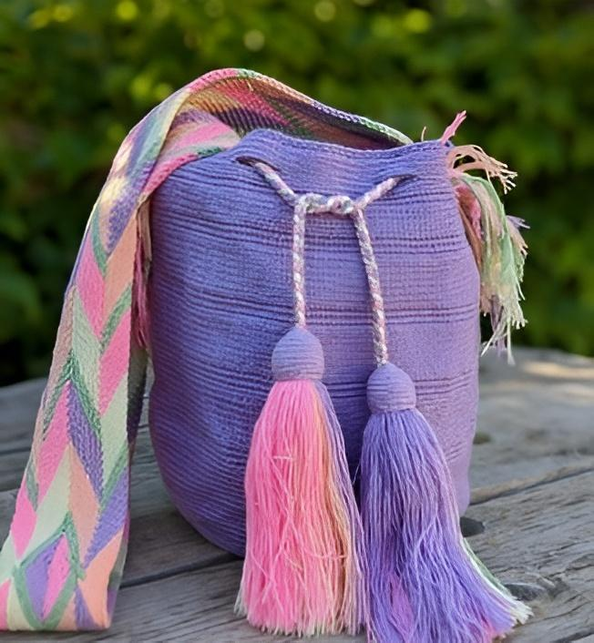

Colombia
Colombia es un país donde la alegría y la creatividad se expresan a través de sus artesanías. Sus artesanías, coloridas y vibrantes, son un reflejo de su diversidad étnica. Desde los tejidos de las comunidades indígenas hasta las piezas en oro de los artesanos de Antioquia, cada creación es una obra de arte única. Cada pieza es única, creada con pasión y transmitida de generación en generación. Colombia es un destino ideal para aquellos que buscan conectar con la cultura a través de sus artesanías.
Artículos
Sombrero vueltiao
Originario de la región del Caribe colombiano, el sombrero vueltiao es un símbolo de la cultura costeña. Su nombre se debe a la forma en que se teje la palma de iraca, creando un patrón circular que parece voltearse sobre sí mismo. Está elaborado con hojas de palma de iraca, tejidas a mano en un proceso laborioso.
Su diseño es único y cada sombrero tiene un número diferente de vueltas, lo que lo hace una pieza única. El sombrero vueltiao es un símbolo de la identidad colombiana y es utilizado en diversas ocasiones, desde fiestas tradicionales hasta eventos formales.
Nombre: Sofía Gómez
Correo electrónico: sofia.gomez.sombreros@gmail.com
Mochilas Wayuu
Originarias de la comunidad indígena Wayúu en la península de La Guajira, estas mochilas han sido parte de su cultura durante siglos. Son tejidas a mano con hilos de algodón de colores vibrantes, creando diseños geométricos y simbólicos que representan la cosmovisión Wayúu.
Cada mochila es única y lleva horas de trabajo. Las mochilas Wayúu son mucho más que un accesorio. Son un símbolo de identidad cultural, un medio de expresión artística y una fuente de sustento para las comunidades Wayúu.
Nombre: Tomás Hernández
Correo electrónico: tomas.hernandez_arte.wayuu@gmail.com
Cerámica de Raquira
La cerámica de Raquira, un pueblo ubicado en el departamento de Boyacá, tiene orígenes precolombinos. Los indígenas muiscas ya elaboraban piezas de barro con fines utilitarios y ceremoniales. Se caracteriza por su color negro brillante, obtenido a través de un proceso de cocción especial en hornos subterráneos. Las piezas tienen formas sencillas y decoraciones incisas o aplicadas.
La cerámica de Raquira es un símbolo de la identidad cultural de la región. Además de su valor estético, estas piezas son utilizadas en la vida cotidiana y en ceremonias religiosas.
Nombre: Patricia Méndez
Correo electrónico: patricia.mendez.céramica@gmail.com